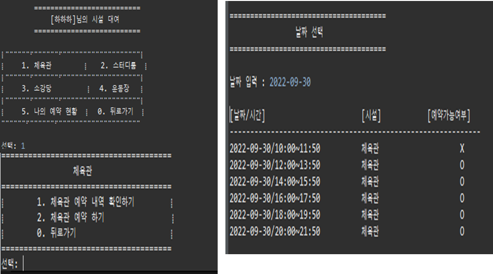

INFORMATION
Introduce
신입 개발자 함원진입니다
"타고난 재능은 당연히 중요하다. 열심히 하는 천재를 어떻게 이기겠는가?하지만 세상은 넓어서 열심히 하는 천재가 배터지게 먹어도 항상 남는 파이가 있다. 걱정하지 말라.
자기에게 재능이 있는지 고민하지 말고 그냥 일단 열심히 하시라."
일단 열심히 한 뒤 남은 파이를 모두 먹는 개발자가 되겠습니다.
Experiences
전공 기초지식을 바탕으로 현업에서 실제로 사용되는 기술을 배워보고 팀 프로젝트 경험과 의사소통 능력을 쌓기위해 교육훈련을 지원하였습니다.
[더 많은 경험을 위해 전과를 결심하다]
대학 입시 당시 웹 개발, 디자인, 영상 다양한 커리큘럼이 있는 멀티미디어학과에 매력을 느껴 진학하였습니다. 대학교 입학 후 다양한 전공지식을 배웠는데, 특히 개발 언어 공부에 큰 흥미를 가졌습니다.
2학년 1학기, 너무나 재미있게 수강했던 웹 개발 전공 교수님의 강의를 통해 HTML, CSS, JavaScript 등 다양한 언어를 경험하였습니다. 수업에서 프로그래밍 실습을 통해 큰 흥미를 느껴 웹 개발자의 꿈을 가지게 되었습니다.
2학년을 마치고 군 입대 후 전공을 변경하는 것에 관해 고민하게 됩니다. 멀티미디어학과는 다양한 분야의 수업을 들을 수 있다는 장점이 있었으나 개발 언어 관련 커리큘럼이 점점 적어졌기에 ‘웹 개발자’라는 진로를 준비하기에는 아쉬운 부분이 있었기 때문입니다.
고심 끝에 개발 언어 학습에 집중할 수 있는 컴퓨터 소프트웨어학과로의 전과를 결정하였습니다. 전과 후 심화 Java 강의와 JSP, DB 강의를 수강하며 웹 개발 공부에 매진하였습니다.
대학 졸업작품으로 4학년 1학기 때 JSP, Servlet, JavaScript, HTML, CSS 등으로 이루어진 동적 웹 페이지를 구현하였습니다.
이후 다양한 프로젝트와 Spring framework를 경험하기 위해 쌍용교육센터 (디지털컨버젼스)AWS 클라우드 활용 자바(Java) Full-Stack 개발자 양성과정에 참여하였습니다.
Skills
JAVA
기본문법, 연산자, 제어문, Class, String, Array, JCF(Collection, List, Set, Map), Exception Handling, IOStream, NIO, Thread, Network 등
ORACLE
DML(select, insert, update, delete), DDL(create, drop, truncate), DCL(commit, rollback, grant, revoke), Subquery, join, union, function, constraints, index, sequence, data dictionary, Procedure 컴파일 및 실행
JDBC
JDBC연동순서, 패키지의 클래스와 인터페이스의 역할, Type별 driver 특징 설명, transaction 처리방법, 쿼리실행객체Statement, PreparedStatement 사용법, Callable Statement를 사용한 Procedure호출 및 사용법
Servlet / JSP
Web service의 이해, Container의 사용법, Java Web Service시 폴더구성, web.xml의 역할, servlet작성법, 요청과 응답의 사용(Request, Response), 상태유지(Session, Cookie), forward, redirect, 파일 업로드, 액션 태그, EL, JSTL, 라이브러리를 사용한 JSON생성 및Parsing, JDOM2를 사용한 XML생성 및 Parsing
Spring
Spring framework, DI(Application Context, Annotation(@Autowired, @Component), AOP(Advice, point cut, before advice, after advice, join point 등), MVC(annotation, @Controller, @Request Mapping, @Model Attribute등)
MyBatis
Spring ORM(MyBatis연동) MyBatis, 설정 파일 작성법 properties, setting, type Aliases, type Handler, environments, insert, update, delete, select, select Key, Dynamic Query Log4j를 사용한 로그 출력
HTML5
HTML5 Semantic tag(header, section, article, nav, aside, footer), HTML Form Control(form Attribute-required, placeholder, pattern, autofocus)
CSS3
CSS3(selector, pseudo class, attribute, value)
JavaScript
JavaScript기본문법, 연산자, 제어문, function, object(window, document, history, event등), form control validation 방법, DOM요소, JSON, Prototype,class작성 및 상속, ES6문법의 소개
JavaScript library
jQuery Library 사용법 및 응용, BootStrap을 사용한 디자인 구성
PROJECTS
YouGo.gg - 리그오브레전드(LOL)유저 전적검색 및 듀오찾기
- 5명
- OS - MAC OS
- Language - Java, JavaScript, HTML5, CSS3
- Library & Module - Spring Boot, jQuery, AJAX, Apache Tomcat8.5, Servlet, JSP, EL, Maven, MyBatis, lombok
- Database - Oracle, DataGrip
- IDE - IntelilJ IDEA
- 실행환경 - 구글 Chrome브라우저에 최적화
Spring
DB
CRUD
JavaScript
API
라이엇API
전적검색
듀오찾기
밴치마킹한 웹사이트입니다.
기존 사이트에 차별성을 두고자 듀오찾기와 추천, 매주 바뀌는 패치내역 추가등 다양한 기능을 추가해봤습니다.
라이엇 게임즈에서 제공하는 API 값 중 전적검색에 필요한정보를 받아와 분석하여
소환사 ID 입력시 해당 소환사가 현재 게임중인지에 대한 정보와 소속된 리그와 티어, 리그포인트, 승률등
해당소환사에 대한 정보가 보여집니다.
게임 상세 내역에선 이전 게임에 승패 유무를 색깔 별로 나누어 해당 게임에 참여한 소환사 10명, 티어, kda,피해량, cs 아이템 등 다양한 게임 상세 정보가 보여집니다.
듀오찾기 및 추천기능은 소환사 ID,포지션,티어 등 사이트 사용자의 작성글 내용을 바탕으로 듀오찾기를 희망하는 다른 사용자에게 듀오를 추천을 해주는 기능입니다.

처음으로 JSP가 아닌 스프링으로 프로젝트를 진행해보았다. 오전에는 스프링 수업을 듣고 오후에 프로젝트를 진행했다. 스프링은 익숙치 않아 프로젝트 초반에는 공부하랴 프로젝트 진행하랴 진도가 나가지 않았다. 그러나 스프링을 공부할 수록 스프링의 간편한 기능들과 설정들 덕분에 진행속도를 빠르게 올릴 수 있었다.
GuHaeU - 구인구직 및 클래스 수강 연동 페이지
- 6명
- OS - MAC OS
- Language - Java(OPEN JDK v11.0.13), JavaScript, HTML5, CSS3
- Library & Module - jQuery, AJAX, Apache Tomcat8.5, Servlet, JSP, EL, lombok
- Database - OracleDB(v10.5), DataGrip
- IDE - IntelilJ IDEA
- 실행환경 - 구글 Chrome브라우저에 최적화
jsp
DB
CRUD
JavaScript
API
구인구직
온라인클래스
스크랩
기본 구인구직 사이트에 차별화를 두기위해 온라인 클래스와 연결성을 두고 있습니다.
메인페이지는 모든 사용자가 키워드를 검색해 구인정보를 제공받을 수 있습니다.
회원가입을 통해 이력서와 관심태그를 작성할 수 있고 해당 정보를 토대로 클래스를 추천해줍니다.
개인회원이 클래스를 수강하면 수강정보에 추가됩니다.
기업회원은 클래스를 스크랩 할 수 있고 스크랩 해놓은 클래스 수강생을 인재추천을 받을 수 있습니다.
회원간 정보공유를 할 수 있는 커뮤니티와 기업에 대한 후기를 확인 할 수 있는 기업후기 게시판 기능이 있습니다.
관리자 페이지는 클래스 정보를 수정,삭제 할 수 있고 작성된 구인정보와 커뮤니티, 후기에 작성된 글을 확인 ,삭제 가능합니다.
교육센터 운영 프로그램 제작
- 22.10.25 ~ 21.11.03 (10일)
- 5명
- OS - Mac
- Oracle SQL
- Data Grip
- 실행환경 - 오라클 DBMS
DB ANSI/SQL PL/SQL
교육 센터를 운영에 필요한 제반 기능들을 하나의 프로그램으로 관리하기위해 제작해본 DB프로젝트입니다.교육 센터 제반 기능의 통합적 관리, 네트워크 활성화, 계정별 기능 이용의 편의성 증진을 목적으로 두고 진행했으며 오라클 데이터베이스를 연동하여 진행하면서 SQL 쿼리를 정확히 사용하는 법을 익힐 수 있었습니다. 교육 센터를 운영에 필요한 제반 기능들을 하나의 프로그램으로 관리할 수 있습니다.
교육 센터 제반 기능의 통합적 관리, 네트워크 활성화, 계정별 기능 이용의 편의성 증진을 목표로합니다
교육생의 출결을 기록하고 각 계정에서 출결 상황을 기간별, 과목별, 과정별, 인원별로 조회하는 기능
교사가 배점을 입력하고, 교육생의 성적을 부여하면 교육생계정으로 배점과 성적을 확인할 수 있는 기능
교사는 과목별 과제를 등록하고, 교육생은 등록된 과제를 확인하여 제출할 수 있는 기능
관리자가 기초정보를 기반으로 개설과정과 개설과목정보를 등록하고, 관련된 정보를 교사와 교육생계정으로 조회 및 관리할 수 있는 기능
여러 커뮤니티 게시판을 통해 관리자-교육생, 교육생-교사, 교육생-교육생의 소통을 관리할 수 있는 기능
수료생의 취업 지원을 위해 취업활동 및 현황을 확인할 수 있는 기능등이 있습니다
DB 프로젝트를 요구분석부터 SQL 구현까지 진행하면서 많은 것을 생각해볼 수 있었다.
첫번째로 클라이언트의 요구사항을 객체로 추상화하여 ERD 를 설계하는 과정이 쉽지 않았다.
실제로 요구사항 분석을 잘못하여 테이블을 수정하는 등 팀원들과 시행착오 겪으며 설계 작업을 했다. 이런 과정을 통해서 프로젝트를 진행하는데 있어서 설계 과정이 얼마나 중요한지 깨달을 수 있었다.
두번째로 SQL developer 에서 user 라는 계정을 생성하여 팀원들과 같은 계정으로 협업하면서 협업 프로젝트에 있어서 툴의 중요성을 알 수 있었다. 한사람이 데이터를 insert 하여 다른 팀원이 데이터를 사용하면서 작업시간을 단축 시킬 수 있었다.
마지막으로 SQL 쿼리를 구현하면서 DB 에 대한 이해를 높일 수 있었다. 학부 수업의 경우 간단한 ANSI SQL 을 구현하는데 그쳤지만 이번 프로젝트를 통해서 SQL 문에 대한 이해도가 높아졌고, 반복되는 작업에서 PL-SQL 의 중요성 알고 구현해볼 수 있었다.
SSM - 쌍용 소울 매칭
(다양한 매칭 시스템 및 시설예약 콘솔프로그램)
- 22.09.26 ~ 21.10.04 (9일)
- 5명
- OS - Window 10
- Language - Java(OPEN JDK11)
- 실행환경 - 이클립스 콘솔화면
Java JDK 11.0.2 CRUD 매칭 시설예약 게시판 관리자
파일 입출력 기반의 데이터 처리 자바 콘솔 프로젝트입니다.쌍소매(SSM)는 회원간 편하게 소통할 수 있는 커뮤니티 기능, 같은 목적을 가진 회원간 소개를 해주는 매칭 기능, 학교 시설 대여를 빠르게 예약 대여,확인할 수 있는 세가지 기능을 합쳐 놓은 프로그램으로 자바 객체지향 기반으로 프로그램을 설계하고 구현하였습니다.
기존 익명으로 사용하는 에브리타임과는 다르게 실명을 사용하여 신뢰감을 높여주고 더욱 안심하고 사용할 수 있습니다.
매칭 메뉴에서 원하는 카테고리를 선택 시 추가사항을 입력을 할 수 있고 그에 맞는 학생과 매칭 하여 해당 학생에게 알림 메세지를 보낼 수 있는 기능입니다.
학교 시설 대여 시 학교에 방문해 서류 작성 후 내야하는 번거로움을 줄여주는 기능입니다. 원하는 날짜에 원하는 시간을 선택하여 한번에 예약이 가능합니다.
같은 캠퍼스의 학생들이 편하게 소통할 수 있는 신뢰있는 실명 커뮤니티 제공합니다.
같은 목적을 가진 학생들끼리 만날 수 있는 매칭 기능 제공합니다.
학교 시설 대여에 대해 편하고 빠른 예약 서비스 제공합니다.


Season - 여행지 코스 추천
- 22.02 ~ 22.05 (약 3달)
- 2명
- OS - Window 10
- Language - Java(OPEN JDK1.8), JavaScript, HTML5, CSS3
- Library & Module - jQuery, AJAX, Apache Tomcat8, Servlet(v4.0), JSP(v2.3)
- Database - MariaDB(v10.5), MySQL
- IDE - Eclipse 2020-12 (4.18.0)
JSP
DB
CRUD
JavaScript
API
1:1채팅
코스추천
동적페이지
졸업작품
여행을 준비하는데에 어려움을 느끼는 사람들을 위해 계절과 지역을 기반으로 추천해주는 웹사이트 입니다.
메인페이지에서 원하는 키워드를 검색하면 해당 키워드의 코스정보를 제공합니다.
코스 정보페이지에서는 좋아요 수와 조회수 순으로 인기순 코스를 확인할 수 있고 작성일을 기반으로
최근 코스도 확인 할 수 있습니다.
코스 상세 페이지에서 일정과 테마 코스를 확인하고 지도에 표시되어 있는 마커를 통해 위치를 확인할 수 있습니다.
원하는 코스를 등록하여 마이페이지에서 확인 가능하고 후기를 작성할 수 있습니다.
후기를 확인하고 원하는 정보를 더 알고싶은 사용자들을 위해 1:1 채팅기능을 추가하여 즉시 궁금증을 해소할 수 있게 했습니다.

졸업작품으로 진행한 시즌은 시행착오가 참 많았다.
늘 과제로 제출하던 간단한 정적 웹 프로젝트가 아닌 주제 선정부터 관련기술분석, 요구분석 등 처음으로 동적 웹 프로젝트를 진행해본 경험이었다.
두 명이 진행하려다 보니 의견충돌이 잦았고 처음 정했던 방향과 달라지는 상황이 생겼다. 계속해서 이런 상황을 겪다보니 초기 설계 과정이 얼마나 중요한지 깨닫는 순간이었다.
이렇게 진행해선 기간내에 완성하지 못할 거 같아서 서로의 의견을 조율하며 자신있는 파트를 맡아하는 식으로 방법을 바꿨다.
이때부터 서로 부족한 부분을 채워주고 같이 공부하며 진행하다보니 기한내에 프로젝트를 완성할 수 있었다. 의사소통과 협업의 중요성을 다시한번 깨닫는 순간이었다. 마지막으로 SQL 쿼리를 구현하면서 DB 에 대한 이해를 높일 수 있었다. 학부 수업의 경우 간단한 ANSI SQL 을 구현하는데 그쳤지만 이번 프로젝트를 통해서 SQL 문에 대한 이해도가 높아졌고, 반복되는 작업에서 PL-SQL 의 중요성 알고 구현해볼 수 있었다.